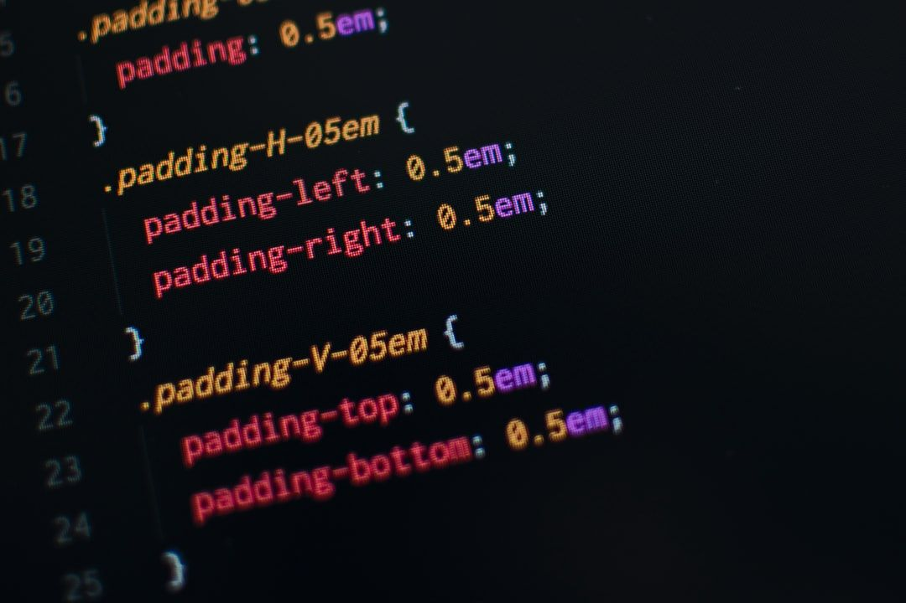

Tähän kappaleeseen kirjoitat muutaman lauseen omasta www-sivujen tekokokemuksestasi: onko sinulla jotain kokemusta aiemmin, vai lähdetkö liikkeelle ihan nollilta? Mitä odotat kurssilta, miltä tämä ensimmäinen harjoitus tuntuu, oliko VS Code helppo ottaa käyttöön? Lisää myös sivulle jokin kuva.
Testi branch
Tämän kappaleen yläpuolella on esimerkki kuvan lisäämisestä sivulle. Jos viittaat kuvaan pelkällä kuvatiedoston nimellä (esim. kuva.png), kuva pitää olla tuotuna tuoda samaan hakemistoon (kansioon) kuin tämä html-tiedosto, jossa siihen viittaat. Hiukan isompia sivustoja tehtäessä on järkevää sijoittaa kuvatiedostot omaan alikansioonsa, jonka nimi voisi olla esimerkiksi img. Silloin viittaisit kuvaan käyttäen polkua img/kuva.png. (Korvaa tämän kappaleen teksti sillä että kerrot jotain sivulle tuomastasi kuvasta.)